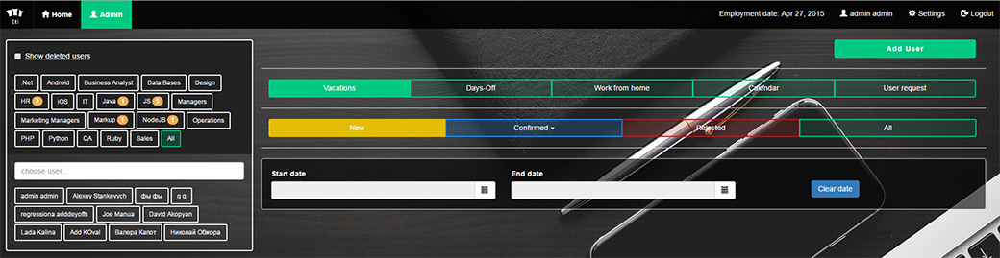
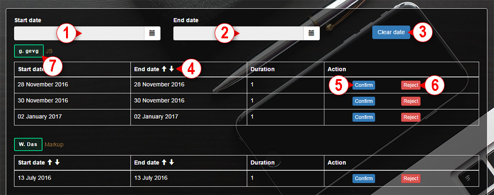
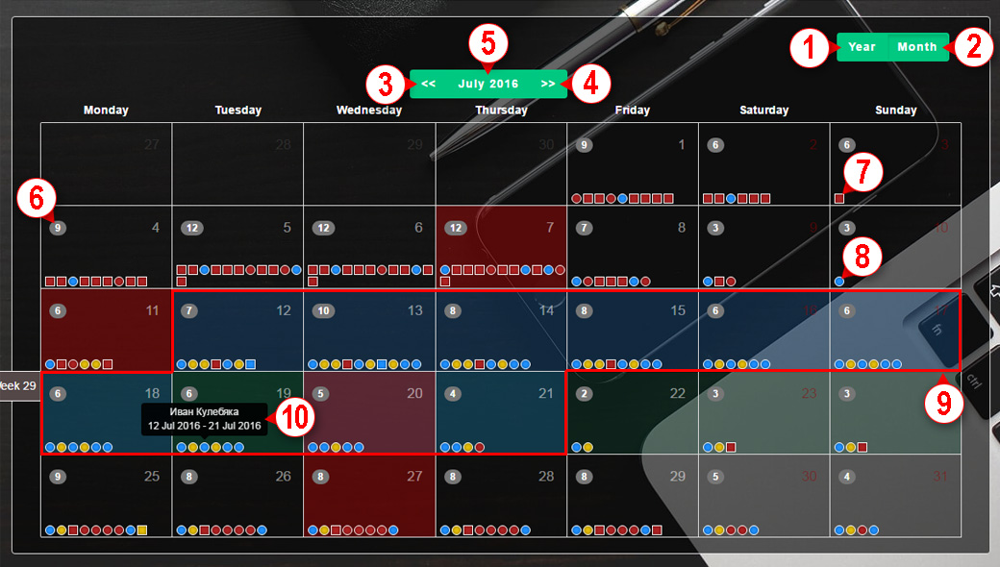
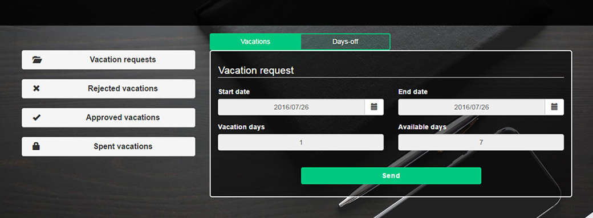

<div class="user-wrapper clearfix">
	<div class="container user__container">
		<div class="row">
			<div class="panel-group col-xs-12 manual-holder">
				<uib-accordion>
					<uib-accordion-group is-open="false">
						<uib-accordion-heading ng-click="isCollapsed = !isCollapsed">
							<div class="row">
								<div class="col-md-1 col-xs-2 text-center">
									<span class="glyphicon glyphicon-education"></span>
								</div>
								<div class="col-md-11 col-xs-10 text-center">Manager manual</div>
							</div>
						</uib-accordion-heading>
						<div class="manual">
							<h1 class="text-center">Описание работы с системой запроса отпусков и day-off <br>для сотрудников CHI Software</h1>
							<div class="scr-holder">
								
							</div>
							<p>Создание запроса на отпуск или day-off для любого пользователя системы одинаково (<a href="#user_manual">см. инструкцию для сотрудников</a>).</p>
							<p>Для менеджера также существует отдельный, недоступный рядовому пользователю интерфейс для подтверждения/отказа в отпусках и просмотра статистики.</p>
							<ul class="manual-list">
								<li>
									<h2>1. Списки отделов и пользователей</h2>
									<p>Списки отделов и пользователей отображаются в левой части страницы менеджера. По нажатию на кнопку с названием отдела в списке пользователей будут отображаться только сотрудники этого отдела, и вся информация на странице будет выводиться только по этому отделу.</p>
									<p>По нажатию на пользователя будет автоматически подсвечен его отдел, отображены только пользователи из его отдела, и вся информация на странице будут выводиться только по этому человеку.</p>
									<p>Над списком групп находится фильтр удаленных пользователей <i>Show deleted users</i>. При включенном чекбоксе <i>Show deleted users</i> в списке будут показаны только удаленные пользователи (люди, которые помечены админитратором как уволенные, но еще не удалены из системы окончательно).</p>
									<p>Над списком пользователей находится поле для поиска по имени/отделу.</p>
								</li>
								<li>
									<h2>2. Основное меню</h2>
									<p>Основное меню находится в верхней части страницы. При помощи него можно переключатся между отображением отпусков (<i>Vacations</i>), отображением Day-off (<i>Days-off</i>) и календарем (<i>Calendar</i>).</p>
								</li>
								<li>
									<h2>3. Фильтры отпусков по статусам</h2>
									<p>Фильтры отпусков по статусам находятся под основным меню страницы:</p>
									<ul class="square">
										<li>
											<b>NEW:</b> По нажатию на кнопку New (желтая) отображаются запросы, еще не обработанные менеджером.
										</li>
										<li>
											<b>CONFIRMED:</b> По нажатию на эту кнопку (синяя) доступен выпадающий список с вариантами <i>Confirmed</i>, <i>In progress</i>, <i>History</i>.
											<ul>
												<li>
													<b>CONFIRMED:</b> <i><b>Confirmed</b></i> – отображаются подтверждённые менеджером отпуска, начальная дата которых ещё не наступила.
												</li>
												<li>
													<b>CONFIRMED:</b> <i><b>In progress</b></i> – подтвержденные отпуска, актуальные на текущий момент
												</li>
												<li>
													<b>CONFIRMED:</b> <i><b>History</b></i> – подтвержденные отпуска, конечная дата которых уже прошла (архив отгулянных отпусков)
												</li>
											</ul>
										</li>
										<li>
											<b>REJECTED:</b> По нажатию на кнопку Rejected (красная) отображаются запросы, которые были отклонены менеджером. В других вкладках они выведены не будут.
										</li>
										<li>
											<b>ALL:</b> По нажатию на кнопку All отображаются все отпуска.
										</li>
									</ul>
									<p><b>!!! При выборе любого из этих фильтров вся информация на странице будет отображаться исключительно по этому фильтру.</b></p>
								</li>
								<li>
									<h2>4. Запросы на отпуск</h2>
									<p>Запрос на отпуск можно принять или отклонить. Отпуска отображаются в зависимости от фильтров, описанных в пунктах 1 и 3.</p>
									<p>С помощью фильтра по дате можно выбрать временной период, за который будут отображаться запросы.</p>
									<p>Подтвердить отпуск – кнопка <i>Confirm</i>. Отказать в отпуске – кнопка <i>Reject</i>. При подтверждении/отказе будет отправлено уведомление на e-mail сотрудника, который написал заявку.</p>
									<p>Подробная инструкция приведена на рисунке 1.</p>
									<div class="scr-holder text-center">
										
										<span>Рис. 1</span>
									</div>
									<ul class="square">
										<li>1 – стартовая дата фильтра</li>
										<li>2 – конечная дата фильтра</li>
										<li>3 – очистка стартовой и конечной даты</li>
										<li>4 – сортировка по дате</li>
										<li>5 – кнопка принятия отпуска</li>
										<li>6 – кнопка отклонения отпуска</li>
										<li>7 – кнопка, открывающая окно информации о пользователе (см. пункт инструкции 7)</li>
									</ul>
									<p>После того как отпуск был принят, он переводится в статус Confirmed, и в зависимости от даты начала и даты конца будет отображен в соответствующей вкладке. Кнопка <i>Confirm</i> отображается только для запросов в статусе New.</p>
									<p>После того как отпуск был отклонен, он переводится в статус Rejected и попадает в соответствующую вкладку. Кнопка <i>Reject</i> отображается на всех отпусках, кроме отпусков в статусе <i>Rejected</i>.</p>
									<p>По нажатию на кнопки <i>Confirm</i> и <i>Reject</i> отправляется запрос на сервер. После удачного запроса на сервер нажатая кнопка исчезает.</p>
									<p>При выборе статуса <i>Rejected</i> из пункта 3 колонка <i>Action</i> не будет отображаться, так как отклоненному отпуску нельзя изменить статус.</p>
								</li>
								<li>
									<h2>5. Запрос на Day-off</h2>
									<p>Запрос на day-off можно принять или отклонить – аналогично для отпускам, см. пункт 4.</p>
								</li>
								<li>
									<h2>6. Календарь</h2>
									<p>В календаре отображаются отпуска в зависимости от фильтров, описанных в пунктах 1 и 3. Подробная инструкция на рис 2.</p>
									<div class="scr-holder text-center">
										
										<span>Рис. 2</span>
									</div>
									<ul class="square">
										<li>1 – кнопка переключения календаря на отображение года</li>
										<li>2 – кнопка переключения календаря на отображение месяца</li>
										<li>3 – кнопка переключения календаря на предыдущий месяц</li>
										<li>4 – кнопка переключения календаря на следующий месяц</li>
										<li>5 – кнопка переключения календаря на отображение месяца, текущей даты</li>
										<li>6 – количество отпусков в текущий день</li>
										<li>7 – отображение <i>Day-off</i> (цвет зависит от статуса)</li>
										<li>8 – отображение отпуска(цвет зависит от статуса)</li>
										<li>9 – отображение всего отпуска, на который наведен курсор</li>
										<li>10 – отображение информации об отпуске, на который наведен курсор</li>
									</ul>
								</li>
								<li>
									<h2>7. Информация о пользователе</h2>
									<p>По нажатию на кнопку 7 пункта 4 открывается модальное окно информации о пользователе. В правом верхнем углу модального окна находится кнопка редактирования, по нажатию на которую откроется модальное окно редактирования пользователя.</p>
								</li>
							</ul>
						</div>
					</uib-accordion-group>
				</uib-accordion>
				<uib-accordion>
					<uib-accordion-group is-open="isCollapsed"  id="user_manual">
						<uib-accordion-heading ng-click="isCollapsed = !isCollapsed">
							<div class="row">
								<div class="col-md-1 col-xs-2 text-center">
									<span class="glyphicon glyphicon-education"></span>
								</div>
								<div class="col-md-11 col-xs-10 text-center">User manual</div>
							</div>
						</uib-accordion-heading>
						<div class="manual">
							<h1 class="text-center">Описание работы с системой запроса отпусков и day-off <br>для менеджеров CHI Software</h1>
							<div class="scr-holder">
								
							</div>
							<p>Зарегистрироваться в системе самостоятельно невозможно, всех пользователей создает администратор. Каждый сотрудник получит свой логин и пароль от администратора системы – Юлии Рассохи.</p>
							<p>После входа в систему пользователю будет доступно создание запроса на отпуск, запроса на дэй-офф, просмотр статистики его отпусков и дэй-офф. После создания запроса через e-mail будет отправлено уведомление на <a href="mailto:&#104;&#114;&#064;&#099;&#104;&#105;&#115;&#119;&#046;&#099;&#111;&#109;">&#104;&#114;&#064;&#099;&#104;&#105;&#115;&#119;&#046;&#099;&#111;&#109;</a>, <a href="mailto:&#109;&#097;&#110;&#097;&#103;&#101;&#109;&#101;&#110;&#116;&#064;&#099;&#104;&#105;&#115;&#119;&#046;&#099;&#111;&#109;">&#109;&#097;&#110;&#097;&#103;&#101;&#109;&#101;&#110;&#116;&#064;&#099;&#104;&#105;&#115;&#119;&#046;&#099;&#111;&#109;</a> и <a href="mailto:&#102;&#105;&#110;&#097;&#110;&#099;&#101;&#095;&#100;&#101;&#112;&#097;&#114;&#116;&#109;&#101;&#110;&#116;&#064;&#099;&#104;&#105;&#115;&#119;&#046;&#099;&#111;&#109;">&#102;&#105;&#110;&#097;&#110;&#099;&#101;&#095;&#100;&#101;&#112;&#097;&#114;&#116;&#109;&#101;&#110;&#116;&#064;&#099;&#104;&#105;&#115;&#119;&#046;&#099;&#111;&#109;</a>. Менеджер подтверждает запрос непосредственно в системе, уведомление о подтверждении запроса также приходит на почту.</p>
							<ul class="manual-list">
								<li>
									<h2>1. Создание заявки на отпуск</h2>
									<ul class="square">
										<li>Во вкладке <i>Vacation</i> нажать кнопку <i>Start date</i> и выбрать начальную дату отпуска</li>
										<li>нажать кнопку <i>End date</i> и выбрать конечную дату отпуска</li>
										<li>нажать кнопку <i>Send</i></li>
									</ul>
									<p>Количество выбранных дней будет отображено в поле <i>Vacation days</i>. Количество дней отпуска, доступных на выбранную дату, появится в поле <i>Available days</i>. Запрашиваемое количество дней отпуска не должно превышать количество доступных дней. Также не допускается брать отпуск, пересекающийся с другим взятым отпуском или Day-off.</p>
								</li>
								<li>
									<h2>2. Заявка на Day-off</h2>
									<p>Выбрать вкладку <i>Days-off</i>. Выполнить действия аналогичные пункту 1.</p>
								</li>
								<li>
									<h2>3. Просмотр заявок на отпуск</h2>
									<p>Все запрошенные отпуска автоматически фильтруются в зависимости от даты и статуса. Текущий отпуск показывается в верхней части экрана, остальные – отсортированы по вкладкам:</p>
									<ul class="square">
										<li><b>Vacation requests</b> – будут показаны заявки на отпуска, еще не обработанные менеджером;</li>
										<li><b>Rejected vacations</b> – заявки на отпуска, отклоненные менеджером;</li>
										<li><b>Approved vacations</b> – заявки на отпуск, уже подтвержденные менеджером, но начальная дата которых ещё не наступила;</li>
										<li><b>Spent vacations</b> – показываются подтвержденные менеджером заявки на отпуск, конечная дата которых уже прошла.</li>
									</ul>
								</li>
								<li>
									<h2>4. Просмотр заявок на Day-off</h2>
									<p>Перейти на вкладку <i>Days-off</i> – отображение аналогично пункту 3.</p>
								</li>
								<li>
									<h2>5. Расчет количества доступных дней</h2>
									<p>По умолчанию будет показано количество дней отпуска, доступных на текущее число. Для того, чтобы посмотреть сколько дней отпуска будет доступно в определенный момент в будущем, нужно выбрать дату в поле <i>Start date</i> и <i>End date</i>. Система автоматически вычислит сколько дней отпуска накопится к этому моменту.</p>
								</li>
							</ul>
						</div>
					</uib-accordion-group>
				</uib-accordion>
			</div>
		</div>
	</div>
</div>